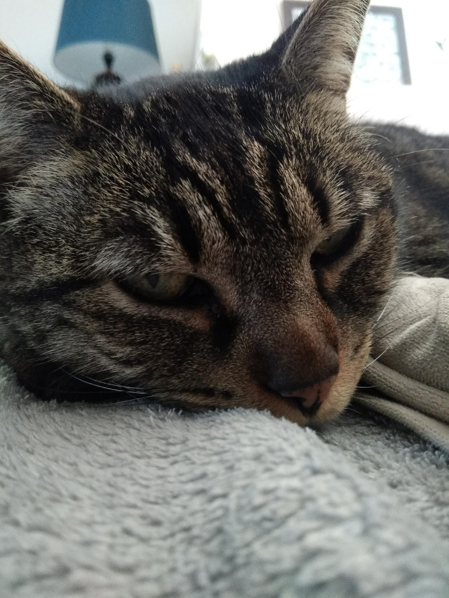

Rebonjour ! Si vous avez cliqué sur le lien, c'est que vous voulez en savoir plus sur moi.
Cette page web sert tout simplement à me présenter rapidement et simplement.
Voici donc quelques faits sur moi :
|
Photo de mon chat prise par moi-même. |

Photo de mon chat prise par moi-même. |
| Sur cette photo, on dirait qu'elle est un fauve féroce avec une mâchoire acérée prête à dévorer sa proie. | Mais grâce à ce cliché, on se rend compte que ce chat est comme tous les autres et passe la plupart de ces journées à dormir ... |
Ma rapide présentation est terminée.
Maintenant si vous voulez en savoir plus sur par exemple mes passions ou mon projet professionnel, je vous invite à retourner au sommaire pour aller sur les pages dédiées à ces sujets.
Bonne lecture !
Pour un retour au menu, cliquez sur ce lien :
Retour au menu